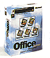
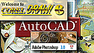

 |
 |
|
| Alati (Utility) | Kancelarijsko poslovanje | Programi za crtanje |
Posle operativnog sistema i malo korisnièkih alatki (Utilities), potrebne su Vam aplikacije kojima aete završavati svoj posao. Najèešae su to aplikacije-programi za kancelarijsko poslovanje (MS Office) i crtanje (CorelDRAW! i Photoshop). Ukoliko i poslujete uz pomoæ kompjutera potreban Vam je i jedan dobar "organizator" npr. Sidekick.